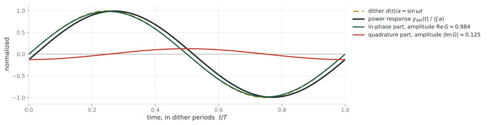
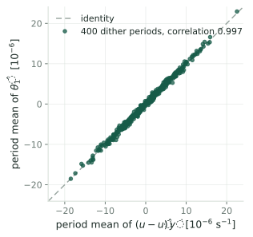
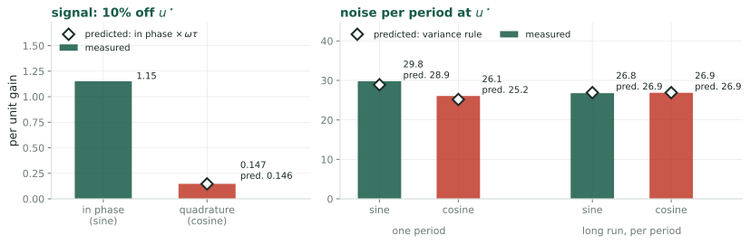
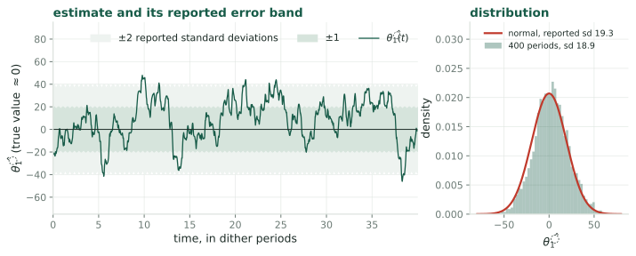
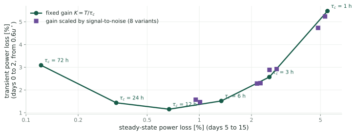

Least Squares for the Gradient
What the LP-PIESC estimator computes, and what a model of the wind noise adds to it
The question
LP-PIESC [KR22] replaces the demodulation of extremum seeking with a recursive least-squares fit, built on the estimator of Guay and Dochain [GD17]. The wind deck (Wind as a Stochastic Process) gives the variance of the wind’s effect on the measured power. Two questions:
- What does the least-squares estimate \(\hat\theta_1\) measure on the turbine, with the published tuning?
- What does a model of the noise variance add to a least-squares estimator?
Answers, derived below and checked by simulation.
- With the published tuning, \(\hat\theta_1\) reads only the part of the power’s response that lags the dither by a quarter period, \(12.5\%\) of the whole response. For equal signal it needs \(62\) times the averaging time of an estimator that reads the in-phase part.
- Regressing the power itself, instead of its time derivative, reads the in-phase part.
- Given the wind’s noise density at the dither frequency, the estimator’s own matrix \(\Sigma^{-1}\) becomes the covariance of its estimate, to within \(2\%\), and its memory and ridge follow by formula.
What this deck takes from the wind deck
Four facts, each derived there:
- The wind’s fluctuation. \(V(t) = \bar V(1 + \varepsilon(t))\), with \(\varepsilon\) a stationary random process of mean zero and standard deviation \(\sigma_\varepsilon = \mathrm{TI} = 0.10\), and two-sided spectral density \(S^{2s}(f)\): the Kaimal density, \(S^{2s}(f) = \tfrac12\mathrm{TI}^2\,(4L/\bar V)\,(1 + 6|f|L/\bar V)^{-5/3}\), \(L = 340\) m.
- The wind’s effect on log-power. Near the optimum, the wind adds \(3\varepsilon(t)\) to \(y = \ln P\) (Link A). The objective is \(J(u) := \ln C_P(\lambda_{\text{eq}}(u))\) and its derivative \(J'\) is the gradient extremum seeking drives to zero.
- The variance rule. For a fixed weight \(w(t)\) and \(X := \int w(t)\,\varepsilon(t)\,dt\), \[\operatorname{Var}(X) = \int_{\mathbb{R}} S^{2s}(f)\,|\hat w(f)|^2\,df, \qquad \hat w(f) := \int w(t)\,e^{-i2\pi ft}\,dt \qquad\text{(Link C)}\]
- What a slow average sees. Averaged over many dither periods, the demodulated noise depends on the density at the dither frequency \(f_1\) alone (The noise a slow loop averages).
Part 1: least squares from first principles
Goal. The estimator of LP-PIESC is a least-squares fit. Its equations, from the cost they minimize, so that what it computes can be read off.
The fit and the normal equations
- Data and model. A measured signal \(y(t)\) and a known regressor \(\phi(t) \in \mathbb{R}^2\); \(y(t) = \phi(t)^T\theta + v(t)\), with \(\theta\) the unknown parameters and \(v\) the noise.
- Example used throughout. Extremum seeking dithers the gain, \(u(t) = \hat u + d(t)\) with \(d(t) = a\sin\omega t\). With \(\phi = [1,\ d]^T\) and \(\theta = [\theta_0,\ \theta_1]^T\), the model \(y = \theta_0 + \theta_1 d + v\) is a straight line in \(d\): \(\theta_1\) is the slope of \(y\) with respect to the gain, the gradient extremum seeking needs.
- Units. \(y = \ln(P/P_{\text{rated}})\); \(u\) is the normalized gain of [KR22], optimum \(u^\star = 0.061\); published dither \(a = 0.005\) (\(8.2\%\) of \(u^\star\)) at \(\omega = 0.02\) rad/s, period \(T = 2\pi/\omega = 314\) s.
- The cost. \(C(\theta) = \int_0^t \big(y(s) - \phi(s)^T\theta\big)^2\,ds\).
- Set its derivative to zero: \(-2\int_0^t\phi\,(y - \phi^T\theta)\,ds = 0\), so \[\underbrace{\int_0^t \phi\,\phi^T\,ds}_{=:\ A}\;\hat\theta = \underbrace{\int_0^t \phi\,y\,ds}_{=:\ b}, \qquad\text{the normal equations}\]
- When \(A\) is invertible. \(A\) is a sum of rank-one matrices \(\phi\phi^T\), invertible only if \(\phi\) points in two different directions over the record: \(d\) must vary, or the level \(\theta_0\) and the slope \(\theta_1\) cannot be separated.
Forgetting, the ridge, and the recursion
- Forgetting. Weight recent data more, with \(w(s) := e^{-k_T(t-s)}\); the memory is \(1/k_T\).
- Ridge penalty \(\sigma|\theta|^2\), \(\sigma > 0\). The cost and its minimizer: \[C(\theta) = \int_0^t w\Big[\big(y - \phi^T\theta\big)^2 + \sigma\,|\theta|^2\Big]ds, \qquad \Sigma\,\hat\theta = b,\quad \Sigma := A + \sigma mI\] with \(A = \int_0^t w\,\phi\phi^Tds\), \(b = \int_0^t w\,\phi\,y\,ds\), \(m = \int_0^t w\,ds \approx 1/k_T\). The added \(\sigma mI\) makes \(\Sigma\) invertible even when \(A\) is not; where \(A\) is small, \(\sigma\) decides the answer.
- The recursion. Differentiating \(\Sigma\hat\theta = b\) in \(t\) (A.1): \[\dot\Sigma = \phi\phi^T - k_T\,\Sigma + \sigma I, \qquad \dot{\hat\theta} = \Sigma^{-1}\Big(\phi\,\big(y - \phi^T\hat\theta\big) - \sigma\,\hat\theta\Big)\] This is recursive least squares (RLS) in continuous time: the first equation accumulates information and forgets it at rate \(k_T\); the second corrects \(\hat\theta\) in proportion to the prediction error, most strongly where little is known.
Part 2: how uncertain the estimate is
Goal. The covariance of \(\hat\theta\), which RLS knows only up to one number, the noise density \(R\), and that number for the turbine.
The error, and its covariance for white noise
Take \(\sigma\) negligible, so \(\Sigma = A\).
- The error is a weighted integral of the noise. Substituting \(y = \phi^T\theta + v\) into \(b\) gives \(b = A\theta + \int_0^t w\,\phi\,v\,ds\), so \[\hat\theta - \theta = \Sigma^{-1}\int_0^t w(s)\,\phi(s)\,v(s)\,ds\] the structure of \(Z\) in the wind deck: noise integrated against a known weight.
- White noise of intensity \(R\): \(\mathbb{E}[v(s)v(s')] = R\,\delta(s - s')\), a flat density \(S_v^{2s} = R\). Then \[\operatorname{Cov}(\hat\theta) = \Sigma^{-1}\Big[\iint w(s)w(s')\,\phi(s)\phi(s')^T\,\mathbb{E}[v(s)v(s')]\,ds\,ds'\Big]\Sigma^{-1} = R\,\Sigma^{-1}\Big[\int_0^t w^2\,\phi\phi^T ds\Big]\Sigma^{-1}\]
- The squared weight \(w^2 = e^{-2k_T(t-s)}\) has half the memory, so \(\int w^2\phi\phi^Tds \approx \tfrac12\Sigma\) when \(\phi\phi^T\) averages to the same matrix over either memory (A.3): \[\boxed{\;\operatorname{Cov}(\hat\theta) \approx \frac{R}{2}\,\Sigma^{-1}\;}\]
RLS computes \(\Sigma^{-1}\) but never \(R\): it knows the covariance of its own estimate only up to the noise intensity. Supplying \(R\) is what a noise model can do.
For the wind, \(R\) is the density at the dither frequency
- The slope error is \(\frac{1}{\Sigma_{22}}\int w\,d\,v\,ds\) with \(d = a\sin\omega t\), once the memory spans a dither period (then the off-diagonal entries of \(\Sigma\) are small).
- Its variance, by the variance rule, is \(\frac{1}{\Sigma_{22}^2}\int S_v^{2s}(f)\,|W(f)|^2df\), with \(W\) the transform of \(w(s)\,d(s)\): two bands at \(\pm f_1\) (\(f_1 := 1/T\)), each about \(k_T/2\pi\) wide.
- Only the density in those bands enters. The wind noise then acts as white noise with \[R = S_v^{2s}(f_1),\qquad S_v^{2s} = 9\,S^{2s}\ \text{(fact 2: } v = 3\varepsilon\text{)}\] the same \(R\) the wind deck’s slow loop sees. With memory one period the flat-density value and the exact integral differ by \(0.5\%\) (A.3).
- For the turbine, at \(f_1 = 1/314\) s \(= 3.18\times10^{-3}\) Hz, \(\mathrm{TI} = 0.10\), \(L = 340\) m, \(\bar V = 8\) m/s: \[S^{2s}(f_1) = \tfrac12\cdot0.01\cdot\frac{4\cdot340/8}{(1 + 6\cdot3.18\times10^{-3}\cdot340/8)^{5/3}} = 0.316\ \text{Hz}^{-1}, \qquad \boxed{\;R = 9\times0.316 = 2.84\ \text{Hz}^{-1}\;}\]
Part 3: the LP-PIESC estimator
Goal. What LP-PIESC fits, and why it is built that way.
The estimator of [KR22]
The model is written for the time derivative of \(y\) [GD17]:
\[\dot y = \theta_0 + \theta_1\,\big(u - \hat u\big) = \phi^T\theta, \qquad \phi = \begin{bmatrix}1\\ u - \hat u\end{bmatrix}\]
\(\dot y\) is not measured, so the estimator runs on a filtered regressor \(c\) and a predictor \(\hat y\) (Eqs. 6 to 11 of [KR22], projection omitted):
\[\dot c = -Kc + \phi,\qquad \dot{\hat y} = \phi^T\hat\theta + Ke + c^T\dot{\hat\theta},\qquad e = y - \hat y\] \[\dot\Sigma = cc^T - k_T\Sigma + \sigma I,\qquad \dot{\hat\theta} = \Sigma^{-1}\big(c\,e - \sigma\hat\theta\big)\]
- Published values (Table 3 of [KR22]): \(K = k_T = 20\) rad/s, \(\sigma = 10^{-6}\), dither \(a = 0.005\) at \(\omega = 0.02\) rad/s.
- The control law that uses the estimate (Eq. 5 of [KR22]): \(u = -k_p\hat\theta_1 + \hat u + d(t)\), \(\dot{\hat u} = -\hat\theta_1/\tau_I\): a proportional and an integral path in \(\hat\theta_1\), with gains \(k_p\), \(\tau_I\) tuned by trial and error.
Why \(\dot y\), and why the filtered regressor
- Why \(\dot y\). The gain enters the rotor’s equation of motion directly, \(I\dot\Omega = \tau_{\text{aero}}(\Omega, V) - u\,\Omega^2\), and \(y\) depends on \(u\) only through \(\Omega\). Differentiating, \(\dot y = \frac{\partial y}{\partial\Omega}\dot\Omega + \frac{\partial y}{\partial V}\dot V\) is exactly affine in \(u\) at every instant: \(\theta_0\) collects everything that does not multiply \(u\), \(\theta_1 = -\frac{\Omega^2}{I}\frac{\partial y}{\partial\Omega}\).
- Why the filter. Differentiating a turbulent measured \(y\) to obtain \(\dot y\) would amplify the noise. The filter \(c\) and the predictor \(\hat y\) are built so that the measurable error obeys \(e = c^T(\theta - \hat\theta)\) after a transient of duration \(1/K\); the gradient-estimation deck derives this (What the estimator is fitting).
- What it is, then. For signals slow compared with \(K = 20\) rad/s, \(c \approx \phi/K\) and \(e + c^T\hat\theta \approx \dot y/K\). The recursion is then Part 1’s RLS applied to the regression of \(\dot y\) on \(\phi\), with memory \(1/k_T\) and ridge coefficient \(\gamma := \sigma K^2\) (A.1): \[\text{minimize}\ \int_0^t w\Big[\big(\dot y - \phi^T\theta\big)^2 + \gamma\,|\theta|^2\Big]ds, \qquad \gamma = 10^{-6}\times20^2 = 4\times10^{-4}\]
Part 4: what it computes on the turbine
Goal. Evaluate the published estimator on the turbine. With a \(50\) ms memory and a \(314\) s dither, the fit cannot separate level from slope; the ridge decides, and the answer is a quadrature demodulation.
Rank one, so the ridge picks the minimum-norm solution
- Over one memory, \(1/k_T = 0.05\) s, the dither changes by at most \(a\omega/k_T = 5\times10^{-6}\), a thousandth of its amplitude: \(\phi = [1, d]^T\) is constant over the memory, and \(A \approx \phi\phi^T/k_T\) is rank one. The data cannot separate \(\theta_0\) from \(\theta_1\).
- Only the ridge makes \(\Sigma\) invertible. In the slope direction the ridge adds \(\sigma/k_T = 5\times10^{-8}\), \(16\) times the information, at most \(a^2/(K^2k_T) = 3.1\times10^{-9}\). The simulation reads \(\Sigma^{-1}_{22} = 2.0000\times10^7 = k_T/\sigma\) exactly, independent of the data.
- Solve. With \(b \approx \phi\,\dot y/k_T\) the equations are \((\phi\phi^T + \gamma I)\hat\theta = \phi\,\dot y\), and \((\phi\phi^T + \gamma I)^{-1}\phi = \phi/(|\phi|^2 + \gamma)\) (A.2), so \[\hat\theta_1 = \frac{d(t)\,\dot y(t)}{1 + d^2 + \gamma} = d(t)\,\dot y(t)\,\big(1 - 4\times10^{-4}\big)\]
- Read it. Of all \(\theta\) that fit the single equation \(\dot y = \theta_0 + \theta_1 d\), the ridge picks the shortest; since \(|d| \ll 1\), nearly all of \(\dot y\) goes to \(\theta_0\), and \(\hat\theta_1\) is the product \(d\,\dot y\): a demodulation of \(\dot y\) by the dither, updated every \(50\) ms.
What \(d\,\dot y\) averages to
The control law integrates \(\hat\theta_1\) (the \(\dot{\hat u}\) equation), so what matters is its average over a dither period, \(\langle d\,\dot y\rangle := \frac1T\int_0^T d\,\dot y\,dt\).
- Split \(y\) into the response to the dither, \(y_{\text{det}}\), and the wind’s part.
- The response to a slow dither (A.4): the rotor follows the gain through a first-order lag with time constant \(\tau = 6.36\) s, \(G := 1/(1 + i\omega\tau)\), so \[y_{\text{det}}(t) = J'\,a\,\big[\operatorname{Re}G\,\sin\omega t + \operatorname{Im}G\,\cos\omega t\big]\] with \(J'\) the gradient of the objective, \(\operatorname{Re}G = \frac{1}{1+(\omega\tau)^2}\), \(\operatorname{Im}G = \frac{-\omega\tau}{1+(\omega\tau)^2}\).
- Differentiate and average with \(\langle\sin^2\rangle = \langle\cos^2\rangle = \tfrac12\), \(\langle\sin\cos\rangle = 0\): \[\dot y_{\text{det}} = J'a\omega\big[\operatorname{Re}G\cos\omega t - \operatorname{Im}G\sin\omega t\big], \qquad \langle d\,\dot y_{\text{det}}\rangle = \frac{a^2\omega}{2}\,J'\,|\operatorname{Im}G|\] Only the quadrature part, \(\operatorname{Im}G\cos\omega t\), survives: the in-phase part of \(y\) becomes \(\cos\omega t\) in \(\dot y\), orthogonal to \(d\).
The rotor splits the response into two parts

- In phase with the dither (green): amplitude \(\operatorname{Re}G = 0.984\). Read by correlating \(y\) with \(\sin\omega t\), which is what demodulation does.
- In quadrature (red): amplitude \(|\operatorname{Im}G| = \omega\tau/(1+(\omega\tau)^2) = 0.125\), present only because the rotor lags. This is all the published estimator reads.
So \(\hat\theta_1\) is a scaled quadrature demodulation
- Its mean. From the last two slides, \[\langle\hat\theta_1\rangle = \frac{a^2\omega}{2}\,J'\,\frac{\omega\tau}{1+(\omega\tau)^2} = \underbrace{2.5\times10^{-7}}_{a^2\omega/2}\times\underbrace{0.125}_{|\operatorname{Im}G|}\times J'\] At \(u = 0.9\,u^\star\), \(J' = 1.28\) gives \(4.00\times10^{-8}\); the simulation reads \(4.02\times10^{-8}\).
- Its noise. Integrating by parts over a period (\(d(0) = d(T) = 0\)), \(\langle d\,\dot y\rangle = -\langle\dot d\,y\rangle = -a\omega\,\langle y\cos\omega t\rangle\): the correlation of \(y\) with \(\cos\omega t\). The wind enters through the same correlation, so the noise is that of a demodulator reading \(\cos\omega t\).
- Name the two channels. Per period, \[\hat g_{\sin} := \frac{2}{a}\langle y\sin\omega t\rangle \to J'\operatorname{Re}G, \qquad \hat g_{\cos} := \frac{2}{a}\langle y\cos\omega t\rangle \to J'\operatorname{Im}G, \qquad \langle\hat\theta_1\rangle = -\frac{a^2\omega}{2}\,\hat g_{\cos}\]
The published \(\hat\theta_1\) is the cosine channel times the constant \(-a^2\omega/2 = -2.5\times10^{-7}\). That constant is absorbed by the PI gains, set by trial and error in [KR22].
The cost: \(62\) times the variance
- Signal. The two channels read \(J'\operatorname{Re}G\) and \(J'|\operatorname{Im}G|\); their ratio is \(|\operatorname{Im}G|/\operatorname{Re}G = \omega\tau = 0.127\) exactly.
- Noise, as the loop sees it. The control law integrates \(\hat\theta_1\) over many periods, so its noise is the long-run variance. Averaged over \(N\) periods, both the sine and the cosine window gather their weight at \(\pm f_1\), where both have magnitude \(T/2\) (A.5): the two channels carry the same long-run noise, \(2R/(a^2T)\) per period.
- Hence the variance for equal signal is \(1/(\omega\tau)^2 = 62\) times larger in quadrature: \(62\) times the averaging time, or \(7.9\) times the dither amplitude, for the same scatter.
| per period, \(T = 314\) s | in phase, \(\hat g_{\sin}\) | quadrature, \(\hat g_{\cos}\) |
|---|---|---|
| signal per unit \(J'\) | \(\operatorname{Re}G = 0.984\) | \(\vert\operatorname{Im}G\vert = 0.125\) |
| noise \(\sigma\), long run | \(26.9\) | \(26.9\) |
| noise \(\sigma\), one period alone | \(28.9\) | \(25.2\) |
The factor is \(1/(\omega\tau)^2\): a property of reading \(\dot y\) with a dither slower than the rotor. Over a single period the two windows admit different low-frequency wind and the factor is \(47\); over the long averaging the integrator performs, it is \(62\).
Part 5: the fix, and what \(R\) adds
Goal. Recover the in-phase channel, then use \(R\) for error bars and for the tuning.
Regress \(y\), not \(\dot y\)
- The model the time scales justify. With \(\omega\tau = 0.127 \ll 1\) the rotor follows the dither nearly at once, so \(y\) is nearly a static function of the gain: \(y = \theta_0 + \theta_1 d + v\), the fitting problem of Part 1, with \(\theta_1 = J'\operatorname{Re}G\) (and a quadrature remainder of relative size \(0.125\) that the fit averages out).
- The estimator. Part 1’s RLS on \(y\) with \(\phi = [1, d]^T\). \(y\) is measured, so no filtered regressor is needed.
- The memory must span at least a dither period, so that \(d\) varies within it and \(A\) has full rank. Then the off-diagonal entries of \(\Sigma\) average out, \(\Sigma_{22} \approx a^2/(2k_T)\), and the slope is identified from the data.
- Recover \(J'\). Divide by the known \(\operatorname{Re}G = 0.984\) (the rotor time constant is a turbine constant, wind deck A.0c).
With memory one period and negligible ridge, the simulation gives \(\hat\theta_1 = 1.259\) at \(0.9\,u^\star\), against \(1.260\) from sine demodulation of the same record.
What \(R\) adds: error bars, and the tuning
- Calibrated error bars. The estimator computes \(\Sigma^{-1}\) at every instant; multiplying by \(R/2\) turns it into the variance of its estimate, \[\hat s(t) := \sqrt{\tfrac{R}{2}\,\Sigma^{-1}_{22}(t)},\qquad R = 2.84\ \text{Hz}^{-1}\] which updates with \(\mathrm{TI}\) and \(\bar V\) through the Kaimal formula if those are measured.
- The ridge shrinks the slope: with \(\Sigma_{22} = a^2/(2k_T) + \sigma/k_T\) and \(b_2 \approx \theta_1a^2/(2k_T)\), \[\hat\theta_1 = \frac{a^2/2}{a^2/2 + \sigma}\,\theta_1\] A shrinkage below \(1\%\) needs \(\sigma \le 0.01\,a^2/2 = 1.25\times10^{-7}\); the published \(\sigma = 10^{-6}\) would shrink this estimator by \(7\%\).
- The memory. \(\operatorname{Var}(\hat\theta_1) \approx \tfrac{R}{2}\Sigma^{-1}_{22} = Rk_T/a^2\), the variance of the wind deck’s loop with tracking time \(\tau_c = 1/k_T\) (wind deck, Design, the requirement): the memory is the tracking time, and the wind deck’s Design section chooses it, and \(a\) and \(T\) with it.
- At memory one period, \(k_T = 1/T\): \(\sqrt{Rk_T/a^2} = \sqrt{2.84/(314\times2.5\times10^{-5})} = 19.0\).
Tested in Part 6: over 400 dither periods at \(u^\star\) the actual scatter of \(\hat\theta_1\) is \(18.9\), and the reported \(\hat s\) averages \(19.3\). Told \(R\), the estimator knows its own error to within \(2\%\).
Part 6: simulations
Goal. Check every claim above on the NREL 5 MW rotor under synthesized Kaimal inflow.
How the simulations are set up
- Plant. The rotor \(I\dot\Omega = \tau_{\text{aero}}(\Omega, V) - u\Omega^2\) of the wind deck, Euler step \(5\) ms; \(y = \ln(\tau_{\text{aero}}\Omega/P_{\text{rated}})\). Wind: Kaimal, \(\bar V = 8\) m/s, \(\mathrm{TI} = 0.10\).
- Open loop. \(\hat u\) is held fixed and \(u = \hat u + a\sin\omega t\) with the published \(a\) and \(\omega\), so each estimator is tested alone.
- Three estimators on the same record: the published one (Eqs. 6 to 11 of [KR22], \(K = k_T = 20\) rad/s, \(\sigma = 10^{-6}\)); Part 1’s RLS on \(y\) with memory one period and \(\sigma = 10^{-12}\); and sine and cosine demodulation of \(y\) per period.
- Runs. Calm wind (\(\mathrm{TI} \to 0\)) at \(0.9\,u^\star\) and \(1.1\,u^\star\), 12 periods each, for the signal; turbulent wind at \(u^\star\), 400 periods, for the noise; and, for the long-run noise, \(24\) synthesized wind records of \(20\) days demodulated period by period.
- Code.
rotea/src/experiments/exp7_piesc_estimator.py,exp9_long_run.py.
The published estimate is the minimum-norm product

Turbulent wind at \(u^\star\) (left): period by period, the published estimate equals the minimum-norm product \(d\,\dot y\), correlation \(0.997\).
Calm wind (no noise), the mean response:
| \(0.9\,u^\star\) | \(1.1\,u^\star\) | |
|---|---|---|
| \(\langle\hat\theta_1\rangle\), published | \(4.016\times10^{-8}\) | \(-3.349\times10^{-8}\) |
| \(\langle d\,\dot y\rangle\) | \(4.011\times10^{-8}\) | \(-3.344\times10^{-8}\) |
| \(\frac{a^2\omega}{2}J'|\operatorname{Im}G|\), predicted | \(4.00\times10^{-8}\) | |
| \(\Sigma^{-1}_{22}\) | \(2.0000\times10^7\) | \(2.0000\times10^7\) |
In phase against quadrature

- Signal ratio in phase over quadrature: \(7.83\) measured, \(1/(\omega\tau) = 7.87\) predicted.
- Noise: one period, \(29.8\) and \(26.1\) against \(28.9\) and \(25.2\) predicted; long run, \(26.8\) and \(26.9\) against \(26.9\) for both.
- Variance ratio for equal signal: \(62\) in the long run (measured \(7.83^2\times(26.9/26.8)^2 = 61.8\)); \(47.5\) measured over one period, \(47\) predicted.
The static-map RLS: unbiased and calibrated

- Signal: \(1.259\) at \(0.9\,u^\star\) and \(-1.042\) at \(1.1\,u^\star\), against sine demodulation’s \(1.260\) and \(-1.042\).
- Error bar: actual scatter \(18.9\), reported \(\sqrt{(R/2)\Sigma^{-1}_{22}} = 19.3\), with \(R = 2.84\) from Kaimal.
Using the error bar in the step: a fixed gain does better
- The idea. Move \(u\) in proportion to how sure the gradient is: with \(m_n\) an exponential average of the per-period estimates (memory \(M\) periods) and \(v\) its variance from the noise model, step with gain \(K_{\max}\,w_n\), \(w_n := \max\big(0,\ 1 - c\,v/m_n^2\big)\) (the positive-part James-Stein weight).
- The test. Per-period loop on the turbine’s nonlinear \(J(u)\), noise from synthesized wind, 200 runs from \(0.6\,u^\star\); power loss over the first two days and over days 5 to 15 (
exp8_snr_gain.py).

Every scheduled variant is beaten in both losses by a fixed gain (best scheduled: \(1.47\%\) and \(1.01\%\); fixed at \(12\) h: \(1.16\%\) and \(0.67\%\)). Near \(u^\star\) the per-period signal-to-noise is too low (noise \(2.5\,u^\star\) per period) for the weight to separate “at the optimum” from “not yet”.
Bottom line
- The published estimator reads the quadrature channel. With a \(50\) ms memory and a \(314\) s dither, the least-squares problem is rank one; the ridge returns \(\hat\theta_1 = d\,\dot y\), whose average is \(-\frac{a^2\omega}{2}\hat g_{\cos}\).
- That costs a factor \(62\) in variance, \(1/(\omega\tau)^2\), because the dither is slower than the rotor and both channels carry the same long-run noise.
- Regressing \(y\) with a memory of at least a period reads the in-phase channel: an unbiased slope, \(J'\operatorname{Re}G\).
- The wind model supplies \(R = 9\,S^{2s}(f_1) = 2.84\) Hz\(^{-1}\), which turns the estimator’s \(\Sigma^{-1}\) into its covariance (\(2\%\)) and sets \(\sigma\) and \(k_T\) by formula: the memory is the tracking time of the wind deck’s Design section.
- A fixed gain beats a step scaled by the error bar here.
Appendices
The derivations the main line cites.
A.1: From the cost to the recursion
- The minimizer. \(\Sigma\hat\theta = b\) with \(\Sigma = A + \sigma mI\), \(A = \int_0^t w\phi\phi^T\), \(b = \int_0^t w\phi y\), \(m = \int_0^t w\), \(w = e^{-k_T(t-s)}\).
- Differentiate in \(t\). The upper limit contributes the integrand at \(s = t\) (where \(w = 1\)); the weight contributes \(-k_T\) times the integral: \[\dot A = \phi\phi^T - k_TA,\qquad \dot b = \phi y - k_Tb,\qquad \dot m = 1 - k_Tm\] so \(\dot\Sigma = \dot A + \sigma\dot m I = \phi\phi^T - k_T\Sigma + \sigma I\).
- The parameter. Differentiate \(\Sigma\hat\theta = b\): \(\dot\Sigma\hat\theta + \Sigma\dot{\hat\theta} = \dot b\), so \[\dot{\hat\theta} = \Sigma^{-1}\big(\dot b - \dot\Sigma\hat\theta\big) = \Sigma^{-1}\big(\phi y - k_Tb - \phi\phi^T\hat\theta + k_T\Sigma\hat\theta - \sigma\hat\theta\big) = \Sigma^{-1}\big(\phi(y - \phi^T\hat\theta) - \sigma\hat\theta\big)\] using \(k_T\Sigma\hat\theta = k_Tb\).
- LP-PIESC. The same steps with \(c\) for \(\phi\) and \(z := e + c^T\hat\theta\) for \(y\) give Eqs. 6 and 11 of [KR22]. With \(c \approx \phi/K\) and \(Kz \approx \dot y\), the cost \(\int w[(z - c^T\theta)^2 + \sigma|\theta|^2]\) equals \(\frac{1}{K^2}\int w[(\dot y - \phi^T\theta)^2 + \sigma K^2|\theta|^2]\): the regression of \(\dot y\) with ridge \(\gamma = \sigma K^2\).
A.2: The minimum-norm solution
- Claim. For a vector \(\phi\) and \(\gamma > 0\), \((\phi\phi^T + \gamma I)^{-1}\phi = \phi/(|\phi|^2 + \gamma)\).
- Proof. Multiply the candidate by the matrix: \[(\phi\phi^T + \gamma I)\,\frac{\phi}{|\phi|^2 + \gamma} = \frac{\phi\,(\phi^T\phi) + \gamma\phi}{|\phi|^2 + \gamma} = \phi\]
- Meaning. The equation \(\dot y = \phi^T\theta\) has a line of solutions. As \(\gamma \to 0\), \(\hat\theta = \phi\dot y/(|\phi|^2 + \gamma)\) tends to \(\phi\dot y/|\phi|^2\), the solution of smallest length \(|\theta|\): the ridge chooses the shortest parameter vector consistent with the data.
A.3: Covariance with exponential weights
- White noise. With \(\phi\phi^T\) replaced by its average \(\overline{\phi\phi^T}\) over a memory, \[\int_0^t w\,\phi\phi^T ds \approx \frac{1}{k_T}\overline{\phi\phi^T},\qquad \int_0^t w^2\,\phi\phi^T ds \approx \frac{1}{2k_T}\overline{\phi\phi^T} = \frac12\int_0^t w\,\phi\phi^T ds\] since \(\int_0^\infty e^{-k_Ts}ds = 1/k_T\) and \(\int_0^\infty e^{-2k_Ts}ds = 1/(2k_T)\). With \(\sigma\) negligible, \(\operatorname{Cov}(\hat\theta) = R\,\Sigma^{-1}(\tfrac12\Sigma)\Sigma^{-1} = \tfrac{R}{2}\Sigma^{-1}\).
- Colored noise, the slope. With \(\Sigma_{22} \approx a^2/(2k_T)\) and \(d = a\sin\omega(t-s)\), the phase-averaged \(|W(f)|^2 = \frac{a^2}{4}\big[\ell(f - f_1) + \ell(f + f_1)\big]\) with \(\ell(\Delta) = 1/(k_T^2 + (2\pi\Delta)^2)\), so \[\operatorname{Var}(\hat\theta_1) = \frac{k_T^2}{a^2}\int_{\mathbb{R}} S_v^{2s}(f)\big[\ell(f-f_1) + \ell(f+f_1)\big]df\] For flat \(S_v^{2s} = R\), \(\int\ell = 1/(2k_T)\) and this is \(Rk_T/a^2 = \tfrac{R}{2}\Sigma^{-1}_{22}\).
- Numbers at memory one period. Exact integral with Kaimal: \(\sigma = 19.12\); flat value: \(19.02\).
A.4: The rotor’s response at the dither frequency
- Linearize the rotor about its equilibrium (wind deck A.0c): \(\tau\,\delta\dot\Omega + \delta\Omega = \beta\,\delta u\) for a constant \(\beta\), \(\tau = \tau_{\text{rotor}} = 6.36\) s at \(8\) m/s.
- \(y\) depends on \(u\) only through \(\Omega\) (aerodynamic power \(\tau_{\text{aero}}\Omega\)), so \(\delta y = y_\Omega\,\delta\Omega\) with \(y_\Omega := \partial y/\partial\Omega\).
- Static limit. For slow \(\delta u\), \(\delta\Omega = \beta\,\delta u\) and \(\delta y = J'\delta u\) by definition of \(J\), so \(y_\Omega\beta = J'\).
- At frequency \(\omega\). For \(\delta u = a\sin\omega t = a\operatorname{Im}e^{i\omega t}\) the steady response is \(\delta\Omega = \beta\,a\operatorname{Im}\big(G\,e^{i\omega t}\big)\) with \(G = 1/(1 + i\omega\tau)\), hence \[y_{\text{det}} = J'a\operatorname{Im}\big(G e^{i\omega t}\big) = J'a\big[\operatorname{Re}G\sin\omega t + \operatorname{Im}G\cos\omega t\big]\]
- Values. \(\omega\tau = 0.02\times6.36 = 0.127\): \(\operatorname{Re}G = 1/(1 + 0.0162) = 0.984\), \(\operatorname{Im}G = -0.127/1.0162 = -0.125\).
A.5: The two windows
The per-period channels are \(\hat g_{\sin} = \frac{2}{aT}\int_0^T y\sin\omega t\,dt\) and \(\hat g_{\cos} = \frac{2}{aT}\int_0^T y\cos\omega t\,dt\). Their wind parts are \(\frac{6}{aT}\int_0^T\varepsilon\,w\,dt\) with \(w = \sin\omega t\) or \(\cos\omega t\) on \([0, T]\).
- Transforms (as in wind deck A.3, with \(\beta = 2\pi f\)), over \(N\) periods: \[\hat w_{\sin,N}(f) = \frac{\omega\,(1 - e^{-i\beta NT})}{\omega^2 - \beta^2},\qquad \hat w_{\cos,N}(f) = \frac{i\beta\,(1 - e^{-i\beta NT})}{\omega^2 - \beta^2}\] Both have magnitude \(NT/2\) at \(f = \pm f_1\); for \(N = 1\) they differ in how much of the low-frequency wind they admit.
- One period, by the variance rule with the Kaimal density at \(T = 314\) s: \(\sigma(\hat g_{\sin}) = \frac{6}{aT}\sqrt{\int S^{2s}|\hat w_{\sin}|^2df} = 28.9\), \(\sigma(\hat g_{\cos}) = 25.2\).
- Long run. As \(N\) grows both windows gather their area, \(NT/2\), at \(\pm f_1\) (wind deck, The noise a slow loop averages), so both channels have the long-run variance \(\big(\frac{6}{aT}\big)^2S^{2s}(f_1)\,\frac T2 = \frac{2R}{a^2T}\) per period: \(\sigma = 26.9\).
References
[KR22] D. Kumar & M. A. Rotea, Wind turbine power maximization using log-power proportional-integral extremum seeking, Energies 15 (2022) 1004. doi:10.3390/en15031004
[GD17] M. Guay & D. Dochain, A proportional-integral extremum-seeking controller design technique, Automatica 77 (2017) 61–67. doi:10.1016/j.automatica.2016.11.018
Companion to Extremum Seeking Control of Wind Turbines and Wind as a Stochastic Process.